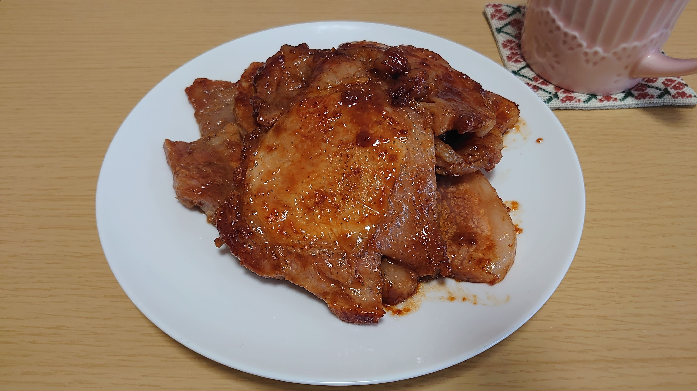

ふるさと納税の紹介
ふるさと納税をやってみたふるさと納税とは、、
住民税や所得税を先に納めるイメージですかね。
お礼の品がもらえるのでやる価値あり
私が今回納税したのは愛知県岡崎市
YouTuberの東海オンエアが観光伝道師を務めている市です
バレーボール日本代表の石川兄妹の出身地でもありますね
私が選んだ返礼品はこちら↓
![[商品価格に関しましては、リンクが作成された時点と現時点で情報が変更されている場合がございます。]](https://hbb.afl.rakuten.co.jp/hgb/1ca1d4e8.43f20683.1ca1d4e9.dcb1de18/?me_id=1382212&item_id=10000021&pc=https%3A%2F%2Fthumbnail.image.rakuten.co.jp%2F%400_mall%2Ff232025-okazaki%2Fcabinet%2F1200059_1.jpg%3F_ex%3D128x128&s=128x128&t=picttext "[商品価格に関しましては、リンクが作成された時点と現時点で情報が変更されている場合がございます。]")
焼くだけでOK
とても美味しくいただきました
肉好きな方にはおすすめの納税先です

私はサラリーマンで収入もそこまで多くないためふるさと納税の上限も高くありません
そのためワンストップ特例制度を選択
郵送されてきた書類に必要事項とマイナンバーカードのコピーを添付して返送するだけで申請が完了します
これだけでいいならもっと早くからやれば良かったと後悔しているので、この記事が参考になれば幸いです
ーーーーーーーーーーーーーーーーーー